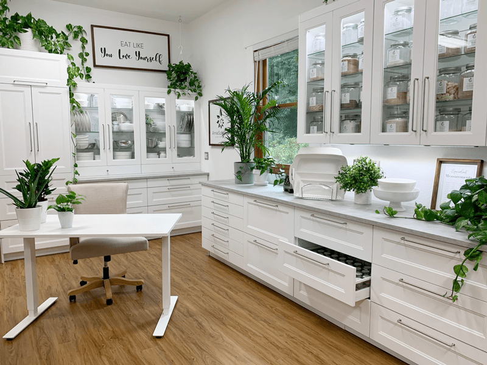
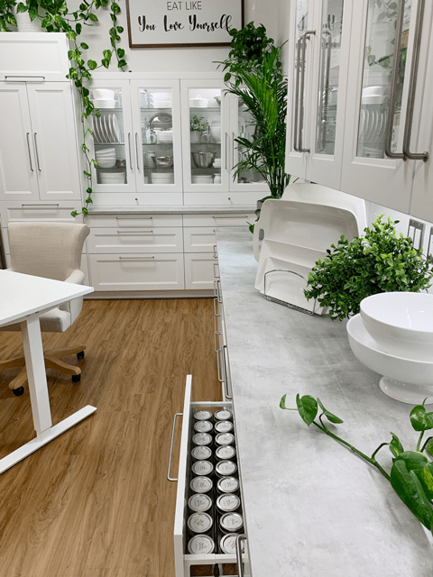
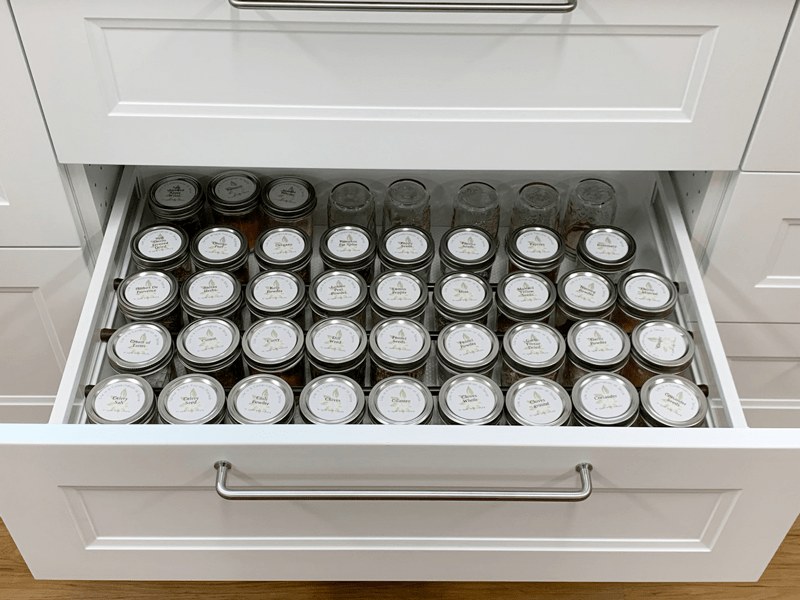
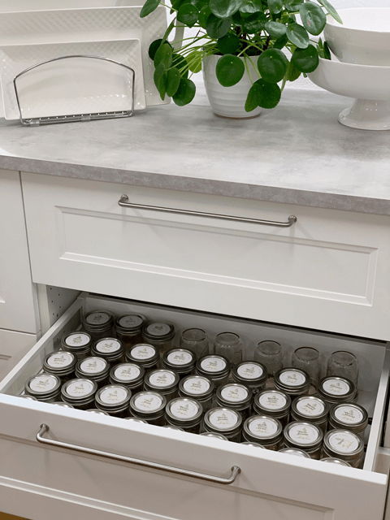

My Spice Drawer
I don’t know about you, but my spice drawer used to be a nightmare. With all the different sized containers; big, small, round, square, plastic, glass, labels on the top, labels on the side, how can one gain order?! The inconsistency in size, shape, and label placement leads to a convoluted spice drawer and that my friend is just downright tragic. Tragic I say!

With my type A personality and my love for organization, I have always fought to gain control over the spice drawer. I mean come on, if you can’t gain control over your spice drawer, what hope is there for you? Hehe, I decided to take back control and spent many afternoons tackling this project.
I have lined them up by size, by category, and by alphabetical order. I have tried spice racks, created spice drawers, laid out spice cabinets; you name it, I have attempted it. No matter how I “stacked” them, it would only take a matter of minutes to find them in disarray all over again.

From the moment I moved out on my own, I have always owned an extensive collection of spices, but I only used about four of them. I always thought that a woman needed to know how to iron a shirt, fix a leaky toilet, replace a button, keep a clean home, change the oil in her car, and know how to use spices.
I mastered all of them except for one. You guessed it, spices! Well, that isn’t true, in the first 35 years of my life, I mastered the art of using four of them; salt, pepper, cinnamon, and garlic salt. The dozens of other jars just rolled around, collecting dust.
Occasionally I would open the jar and take a whiff, put the lid back on, and quickly put it away. Boy, have things changed, now I have at least fifteen different salts in my pantry, everything from pink Himalayan to black flaked.
I can now appreciate the difference between ground black pepper and fresh cracked pepper. And thank goodness that I have become friends with the other jarred spices because putting garlic salt on everything, well, just made everything taste like garlic. :)
I have learned to appreciate buying spices in bulk. I recommend purchasing bulk spices from a store that has quality spices and a high amount of foot traffic so that they roll through their stock, keeping the spices fresher. And, because you are not paying for a bunch of little individual bottles and fancy marketing, bulk spices are cheaper! You can also buy just the amount you need for a few months at a time, so your spices stay fresh.
I finally created my dream spice system.

Spice Jars
Items needed:
- 36 (or more) – 4 oz canning jars (with lids) or 8 oz jars
- 1 package Spice labels
- Time and patience (no link, you will have to come up with that on your own)
- 15″ – 28″ Tension Rods, package 4 – $16.99
Method:
- Clean an area where you can set up your new spice drawer. The section could be a kitchen cabinet or drawer.
- Keep in mind the placement of your spices. Ask yourself…
- Is this spot convenient?
- Can I reach into this space with ease?
- Is the lighting in this area bright enough so I can read the spice labels?
- Tip: Wipe down the shelves/drawer and place one or two Bay Leaves on each shelf. The Bay Leaves will keep the weevils away! What’s a weevil?! Weevils are often found in dry foods including nuts and seeds and cereal and grain products, such as pancake mix. In the domestic setting, they are most likely to be observed when a bag of flour is opened.
- As I mentioned, I used 4 oz mason jars for my spices. If your drawer is shallow, use smaller jars, or if you have the space and a large quantity of each spice, you can use larger jars.
- To hold the jars in place as you open and close the drawer, I purchased 18″ tension rods at my local department store. I tried this system without the tension rods, and I found that they slid around quite a bit, so this helped.

Tip:
Do you have spices that you prefer to “grind” as needed? Such as fresh ground pepper? If you do, as I do, you may have noticed that these types of grinders often leave a trail behind them.
Here is a simple and easy approach to keeping your spice area clean. Place a jar lid under the grinder so when you set it down all the crumbs will fall into the lid. (smacks forehead with this epiphany)
I needed four full drawers for my spices. You might need less or more. The neat thing that I have learned after using this setup is that once I take a spice out, use it, and go to return it… I find it so easy to put it in the correct spot because a hole is present.
By organizing them alphabetically, it makes it so quick and easy, never needing to second guess where it is or where it goes. I hope this gave you some ideas and encouragement to tackle your kitchen “woes.” Sending you organizational blessings! amie sue
© AmieSue.com